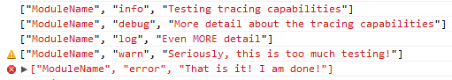
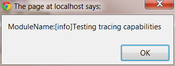

Overview
jsTrace is a pure JavaScript library that enables you to set separate "switch levels" on various components within your JavaScript code in order to facilitate debugging without all the "noise" of debugging information you don't want to see at the moment
NOTE: jsTrace is available as a NuGet Package or by using bower ("bower install jstrace") Additionally, there is a companion, jsTrace.MVC whichs allows you to proxy jsTrace messages to the web server in ASP.NET MVC. The code is in this repository as well. (NuGet Package)
Switches
There are six switch levels, which are (in order of least->most information):
- off
- error (default)
- warn
- info
- debug
- log
Some of you may notice that these correspond directly with methods on the "console" objects supported in many browsers.
Thanks to some magic by Ben Alman, if your browser does not support these methods, your messages will not be ignored.
Instrumenting Your Scripts
To do basic instrumentation, you just declare a Trace object and use like this:
var tracer = new Trace('ModuleName');
tracer.info('Testing tracing capabilities');
tracer.debug('More detail about the tracing capabilities');
tracer.log('Even MORE detail');
tracer.warn('Seriously, this is too much testing!');
tracer.error('That is it! I am done!');
In Chrome, by default, this code results in the following output to the Console:
If you were to set the switch to "log" level (highest setting),
Trace.setLevel('ModuleName', Trace.Levels.log);
You get this:

Using Callbacks
jsTrace has support for a callback method that is called upon every trace message sent, settings-be-damned.
So, if you don't like all this fancy logging stuff and you want to go back to using alerts, you could do this:
Trace.setCallback(
function(module, level) {
var args = Array.prototype.slice.apply(arguments).slice(2);
alert(module + ':[' + level + '] ' + args.join(' '));
},
true,
0);
Results:

You'll notice above that I passed 3 parameters to setCallback.
Callback Parameters
The Callback
a JavaScript function whose parameters are:
- the module name
- the level
- the message passed, followed by every other parameter passed
Force Flag
By default, the callback will only be invoked if the browser does not have support for console or console.log.
if this flag is a Boolean "true", all messages will be sent to the callback, regardless of browser support
Historical Message Limit
Internally, the Trace library keeps a common log history in memory.
If you do not specify a limit, your callback will be called for every message that was logged before your callback was set.
If you do, you will receive up to "limit" number of calls for the most recent traced messages.
Cool Callback Tricks
Logging To Your Server
If you happen to work on a developer unfriendly platform (cough*iPad*cough), you could set up a callback to log all messages to your server like this:
Trace.setCallback(
function(module, level) {
var args = Array.prototype.slice.apply(arguments).slice(2);
// (Optionally) filter by module/trace level
if (Trace.shouldTrace(parms.module, parms.level) == true) {
$.ajax({
async: true, // fire and forget
type: "POST",
url: '/Log/jsLog',
data: {
module: module,
level: level,
message: args.join(' ')
},
contentType: 'application/json',
dataType: 'json'
});
}
},
true,
0);
I've used this approach more than once to find a particularly difficult bug on the iPad
On Error: Send History To Server
try {
// some code that shouldn't throw an exception
}
catch (err) {
// TODO: pop up modal "An error has occurred,
// sending details to our server..."
var allMessages = [];
// get every trace message and append it to the allMessages Array
Trace.setCallback(function (module, level) {
var args = Array.prototype.slice.apply(arguments).slice(2);
var msg = module + ' [' + level + '] - ' + args.join(' ');
allMessages.push(msg);
},
true);
// remove the callback
Trace.setCallback();
// post this to the server
$.ajax({
async: true,
type: "POST",
url: '/Log/jsExceptionLog',
data: {
message: 'An Unexpected Error Occurred',
logHistory: allMessages
},
contentType: 'application/json',
dataType: 'json'
})
.complete(function () {
// TODO: hide the popup
});
}
ASP.NET Devs: If you're planning on proxying jsTrace messages to the server, check out the jsTrace.MVC NuGet package I made to make this easier